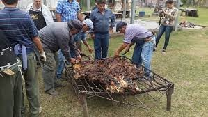
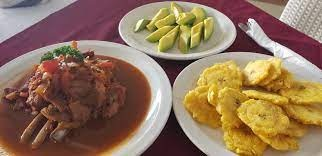
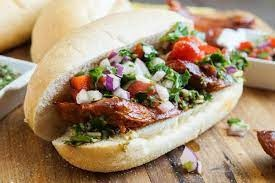

Asado Cordobés
El asado es una parte fundamental de la cultura culinaria argentina. En Córdoba, se prepara asado de manera tradicional, a la parrilla, y se sirve con chimichurri, una salsa hecha de ajo, perejil, vinagre, aceite y especias.
Empanadas Cordobesas
Las empanadas son populares en toda Argentina, y en Córdoba, se rellenan con carne, cebolla, huevo duro, aceitunas y especias. También se pueden encontrar variedades con pollo o queso.
Locro
Este es un guiso espeso y nutritivo preparado con maíz, porotos (frijoles), carne de cerdo, chorizo y condimentos. Es especialmente popular durante festivales y celebraciones.

Chivo a la Criolla
El chivo es una carne comúnmente consumida en Córdoba. Se cocina a la criolla, lo que significa que se prepara con tomate, cebolla, pimiento y especias.
Sopaipillas
Son una especie de pan frito hecho de masa de harina de trigo y calabaza, que se sirven como acompañamiento o como postre, espolvoreadas con azúcar.

Dulce de Leche
Este es un producto lácteo espeso y dulce que se utiliza en muchos postres argentinos. Se elabora cocinando leche y azúcar a fuego lento hasta obtener una textura cremosa y un color caramelizado.
Vinos
Córdoba es parte de la famosa región vinícola argentina. La provincia produce una variedad de vinos, desde tintos robustos hasta blancos frescos, gracias a su clima propicio para la viticultura.

Alfajores
Estos son dulces muy populares en Argentina. Consisten en dos galletas rellenas de dulce de leche y a menudo se cubren con chocolate o azúcar glas.

Peperina
Es una hierba aromática autóctona de las Sierras de Córdoba, que se utiliza para dar sabor a diversos platos y bebidas.

Fernet en Córdoba
El Fernet es una bebida alcohólica amarga muy popular en Argentina y particularmente en Córdoba. Se consume solo o como parte de cócteles, a menudo mezclado con cola y hielo.
Choripanes del Dante
Los choripanes son un clásico de la gastronomía argentina. Los choripanes del Dante son particularmente famosos en Córdoba. Se trata de chorizos a la parrilla servidos en pan, a menudo con chimichurri y otras salsas.
